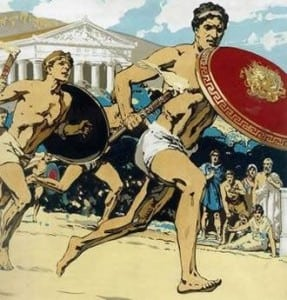
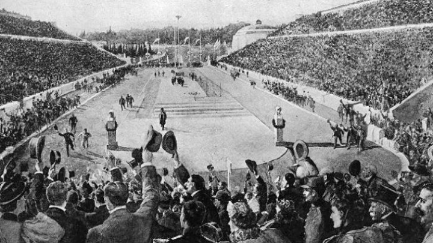

- ACASA
- ISTORIA
-
Jocuri Olimpice antice
Jocurile olimpice antice s-au născut din dorinţa de a oferi un stimulent pentru cei care practicau la un nivel înalt exerciţiile fizice.
Jocurile olimpice se realizau din 4 în 4 ani.
Prima ediţie a Jocurilor Olimpice antice cu caracter panelenic a avut loc în anul 480 îHr.
Participarea la Jocurile Olimpice era precedată de o selecţie pe următoarele criterii: Etnic (nu erau admişi decât grecii); Social (sclavii nu aveau acces); Moral (se făcea dovada unei moralităţi nepătate); Tehnic (erau admişi atleţii care puteau să-şi asigure o bună pregătire).
Participanţii la Jocurile Olimpice erau denumiţi atleţi.
Sub îndrumarea şi conducerea gimnaştilor după procesul de selecţie atleţii erau supuşi unui regim igienic şi a unui porces de antrenament riguros.
Conducerea Jocurilor Olimpice se realiza de magistraţi.
Magistraţii (helladonikes) aveau în subordine mai multe persoane inplicate în organizarea serbărilor, conducerea jocurilor, judecarea rezultatelor, decernarea premiilor şi administrarea cetăţii.
Jocurile Olimpice Antice se desfăşurau pe perioada a 5 zile.
În prima zi se depunea jurământul la altarul lui Zeus în jurul rubului de sacrificiu şi în faţa senatului elenilor. Prin jurământul lor participanţii susţineau faptul că vor respecta regulile jocului, vor îndeplini toate datoriile şi vor lupta cu loialitate, cu onoare şi fără înşelăciune sau viclenie.
În a treia zi şi a patra zi se continua desfăşurarea concursului în care succesiunea probelor era următoarea: pentatlonul, pancrațiul, alergarea oamenilor înarmaţi întrecerile de călărie şi care de la hipodrom.
Învingătorii Jocurilor Olimpice erau declaraţi eroi naţionali. Ei defilau în faţa spectatorilor şi primeau daruri substanţiale care constau în sclavi, cai, vase, cupe de aramă, premii în bani şi veşminte bogate.
Învingătorii la mai multe ediţii la Jocurile Olimpice se numeau periodonikes.
La întoarcerea în cetate învingătorii erau primiţi cu onoruri şi cu o intrare triumfală. Primirea cu mult fast era continuată cu ospăţuri, cuvântări şi următoarele favoruri: scutire de impozite, pensie viageră şi locuri de onoare la spectacole.
În secolele 2-3 după Hr. Sub influenţa romană grecii au abordat idealul de frumos şi de armonie. Treptat atletul care participa la pentatlon acum s-a specializat într-o singură probă.
Decretul de desfiinţare a Jocurilor Olimpice antice din anul 394 a fost primul pas al lanţului de catastrofe care au urmat: anul 395 (vizigoţii lui Alaric au prădat Olimpia); anul 408 (statuia lui Zeus, capodopera lui Fidias, a fost dusă la Constantinopol); anul 426 (templele păgâne au fost distruse prin foc, iar vandalii au continuat distrugrea începută de vizigoţi); anul 551 şi 552 (cutremurele transformă incinta în ruine, iar râurile Kladeos şi Alpheios acoperă cu aluviuni hipodromul, stadionul şi întregul sanctuar. Stratul de aluviuni a acoperit Olimpia timp de 15 secole).
Poetul grec Pindar a dedicat volumul său Epinikia cu 100 ode învingătorilor la Jocurile Olimpice.
Feniciadele au fost primele Jocuri Olimpice din al căror model s-au inspirat grecii.
Jocurile cu caracter local, regional, program redus şi periodicitate diferită erau închinate unei divinităţi sau eroi regionali, comemorării de victorii sau alte evenimente.
Jocurile cu caracter local, regional, program redus şi periodicitate diferită sunt: Jocurile Nenemice, Istimice, Pitice, Panatanee.

Jocuri Olimpice moderne
După 1.500 de ani de întrerupere, în 1896, la Atena, au fost reluate Jocurile Olimpice. Reconstruirea acestui eveniment sportiv s-a datorat francezului Pierre de Coubertin. Un rol important în reînvierea Jocurilor Olimpice l-a jucat și Evanghelie Zappa.
Numărul sportivilor participanți la Jocurile Olimpice a crescut de la 241 (din 14 țări) la Olimpiada din 1896 la 11.100 (din 202 țări) la Jocurile Olimpice de la Atena. Numărul participanților la Jocurile de iarnă este mult mai mic; la Olimpiada de iarnă din 2006, numărul sportivilor a fost de 2.633 din 80 de țări.
